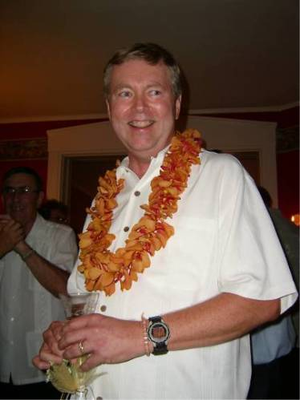

|

|
Charles Kirk Hadsell was born. Like his father Don, he goes by his middle name. He was married and had several children. Later they divorced. Living in Cambridge, MD he met recent tranplant to the eastern shore Amy Swan in 200?. Soon Kirk found himself falling in love again. Early in 2005 he wrote a letter to god asking to marry Amy. On August 20, 2005 Kirk read that letter before taking his vows with Amy in Cambridge, MD. |